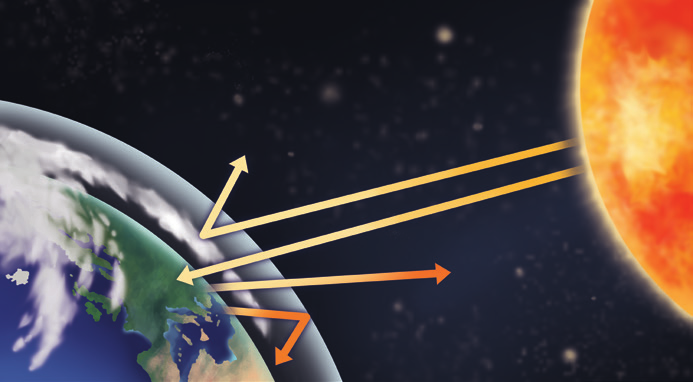

2.3 Función termorreguladora de la atmósfera
La atmósfera retiene el calor del Sol y lo redistribuye para reducir las diferencias de temperatura que se producen en la superficie de la Tierra.
- La atmósfera conserva el calor en la superficie de la Tierra. Algunos gases, como el vapor de agua y el dióxido de carbono, retienen la radiación infrarroja y hacen que suba la temperatura del aire. Este fenómeno se conoce como efecto invernadero natural. Gracias a él, la temperatura media del planeta es de 15 °C, lo que permite la existencia de agua líquida en su superficie.
- La atmósfera ayuda a redistribuir la energía solar. Los rayos solares calientan más las zonas próximas al ecuador que las situadas en los polos, al incidir de forma perpendicular a la superficie en las primeras y de forma oblicua en las segundas. Las corrientes de aire trasladan el calor desde el ecuador hacia los polos, reduciendo las diferencias térmicas entre ambas regiones.

2.4 Importancia de la atmósfera para los seres vivos
La masa de la atmósfera es insignificante si se compara con la masa total de la Tierra. Sin embargo, sus características hacen que tenga una importancia fundamental para el desarrollo de la vida en nuestro planeta.
- La atmósfera actúa como filtro, evitando que las radiaciones solares perjudiciales causen daños a los seres vivos y permitiendo que lleguen hasta ellos las que son útiles en la fotosíntesis.
- En la atmósfera tienen lugar los fenómenos meteorológicos, como el viento y la lluvia. Gracias a ellos, se produce el transporte del agua necesaria para que los seres vivos realicen sus funciones vitales.
- Algunos gases absorben la radiación infrarroja evitando que escape al espacio interplanetario. Este proceso retiene el calor en nuestro planeta y evita que los seres vivos se congelen.
- La atmósfera contiene oxígeno y dióxido de carbono. Estos gases son necesarios para que los seres vivos lleven a cabo la respiración y para que las plantas y las algas realicen la fotosíntesis.